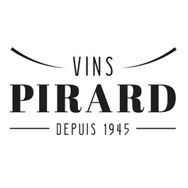
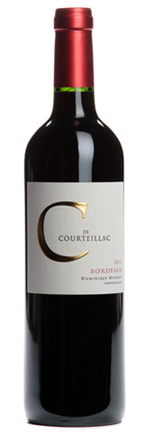

Vente de Vins
au profit de la recherche contre la leucémie,
avec la participation de la maison Pirard.

Infos Pratiques
La Vente
Vous pourrez commander les vins jusqu'au 17 mai 2016.
Pour ce faire, rendez-vous à la section commander ci-dessous.
La dégustation
Les 16 et 17 avril prochains, nous vous attendrons au club-house pour une dégustation.
Vous y passez quand vous voulez ente 10h et 17h.
Vous pourrez goûter les vins et échanger avec Simon Pirard de la maison Pirard.
Soutenons la recherche contre la leucémie
Depuis deux ans, Sébastien 5 ans, se bat contre une leucémie rare. Depuis le début de leur combat, Sébastien et sa famille font preuvent d'un courage extraordinaire. La Famille, le Courage et la Solidarité sont des valeurs fondamentales pour notre club. C'est pourquoi, avec cette vente de vins, l'Ombrage souhaite apporter son soutient à Sébastien, sa famille ainsi qu'à toutes les familles qui luttent chaque jour contre la maladie. Nous vous invitons à les soutenir dans leur combat. Et lorsque vous ouvrirez une de ces bouteilles, levez votre verre à la santé de Sébastien!
Les bénéfices de la vente des vins serviront a soutenir les travaux de l'équipe du Professeur Constantinescu de l'Institut Ludwig à Bruxelles. Cette équipe travaille dans la recherche sur les leucémies. Plusieurs chercheurs se penchent actuellement sur le cas de Sébastien afin de mieux comprendre les spécificités de sa maladie très rare. L'objectif est d'identifier un traitement ciblé pouvant contribuer à prevenir une éventuelle nouvelle rechute. Vous trouverez plus d'informations sur le Professeur Constantinescu, son équipe et leur recherche ici. Plus d'info.
Les Vins
Voici la sélection des six vins proposés par la Maison Pirard.
Ces vins sont uniques en Belgique. Vous ne les trouverez nulle part ailleurs.
Cliquez sur l'étiquette de chacun d'eux pour en découvrir tous les secrets.
La maison Pirard prendra ensuite contact avec vous pour le paiement et la livraison.
Costières de Nîmes
Use this area of the page to describe your project. The icon above is part of a free icon set by Flat Icons. On their website, you can download their free set with 16 icons, or you can purchase the entire set with 146 icons for only $12!
Couleur:
Blanc
Millésime:
2015
Région:
Vallée du Rhône
C de Courteillac 2013

C de Courteillac est le second vin de Domaine de Courteillac.
C’est un assemblage d’une sélection de jeunes vignes, d’une partie des vins de presse non utilisés dans le Grand Vin, et de la production de quelques parcelles prises en fermage, proches de la propriété.
La vinification est traditionnelle, avec pour objectif le respect du fruit et de la fraicheur.
Un léger passage sur bois pendant l’élevage lui ajoutera de l’élégance et une certaine sucrosité.
Couleur brillante et limpide, sans être très soutenue.
Le vin est aromatique, avec de belles notes de fruits rouges.
Le vin est bien équilibré en bouche, savoureux et facile à boire. Pour plaisir immédiat.
Couleur:
Rouge
Millésime:
2013
Région:
Bordeaux
Château Lastours
Le château Lastours est constitué de 40% de Syrah, 23% de Braucol, 22% de Merlot et 15% de Cabernet Sauvignon.
Le terroir du Château LASTOURS confère vivacité, caractère et élégance
à l’assemblage de cépages traditionnels du Sud-Ouest. Fin et bouqueté, il associe
notes de fruits rouges macérés à des tonalités épicées.
Souple et polyvalent grâce à sa large palette aromatique, il complétera viandes rouges et plats cuisinés.
Prévoir de la carafer une ou deux heure avant la dégustation.
Couleur: Rouge.
Millésime: 2012.
Région: Gaillac.
La Soif - Domaine Les Lys
La Soif est composé de Grenache, de Syrah et de Merlot.
Fruité et croquant à souhait, notes de fruits rouges (fraise et cerise) épaulées par les épices du merlot.
La Soif se marie très bien avec les grillades, la charcuteries et les tapas.
Couleur:
Rouge
Millésime:
2013
Région: Duché d'Uzès
Les Roches Neuves
Sa robe est rouge/rubis moyen, presque limpide.
Elle est brillante, lumineuse.
Elle se pare de reflets diaprés ondoyant entre le violine et la cerise.
Beau nez de fleurs et de petits fruits rouges.
L’attaque est franche et droite. Le fruité est légèrement écrasé et donne beaucoup de jus dans lequel
le rouge domine mais le noir n’est pas absent. L’acidité est présente, elle donne de l’ampleur, de la
Profondeur. L’alcool, lui, se met au service de l’ensemble en induisant la verticalité. Les tannins, eux
Jouent sur l’ambiguïté : ils sont juvéniles, nombreux, légèrement grenus ; ils sont, aussi, friands et
Abordables .La matière est dans l’attente mais présente beaucoup de charme et est abordable. La
finale est moyennement longue et joue sur les registres bergamotes et jasminées.
Couleur:
Rouge
Millesime:
2014
Région:
Saumur-Champigny
Faugères Avant-Première
Use this area of the page to describe your project. The icon above is part of a free icon set by Flat Icons. On their website, you can download their free set with 16 icons, or you can purchase the entire set with 146 icons for only $12!